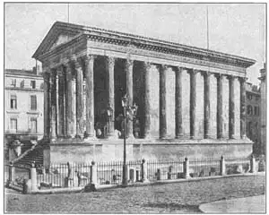
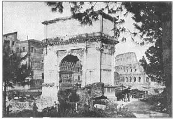

66
ROME WAS NOT BUILT IN A DAY
罗马非一日所建

SOME people wear imitation pearls, imitation diamonds, imitation jewelry—just for show. Some people build houses of con-crete blocks to imitate stone, paint wooden columns to imitate marble, cover plaster walls with paper to imitate tile. Such imitations that pretend to be something they are not, are a kind of cheating, a fake. The Greeks never faked in this way. The Romans did so often.They built buildings of concrete or brick and covered the outside with thin pieces of marble.
For a few hundred years before and after Christ was born, the Romans built and built, many and great buildings, and more buildings of more kinds than had ever been built before. They built them not only in Rome and in Italy, but in other countries which the Romans owned.
Though the Romans built many great buildings, none of them quite equaled those the Greeks built. The reason was that the Romans were not artists but engineers. The Greeks were very religious and built temples; the Romans were great governors and worshiped everything that concerned governing. The Romans used instruments to design their buildings, whereas the Greeks used their eyes. In a Roman build-ing, every line that was supposed to be vertical was vertical. Every line that was supposed to be horizontal was horizontal. Every line that was supposed to be straight was straight. It was as if they had drawn a picture with a ruler and square and compass instead of free-hand.
In the same way, a Roman building looks mechanical. We like them as we like an engine. They are strong and powerful, but somehow seem to lack the beauty of a hand-made picture.
How many kinds of buildings do you think there are in the place where you live? Try to count them. Houses, of course, but how many others—churches, banks, stores, court-houses, libraries, and so on.
The Greeks had only a few, but the Romans built many kinds—not only tombs and temples, houses and palaces—
Arches and aqueducts
Bridges and baths
Court-houses and halls
Theaters and amphitheaters
Some were fake, but not all, and some were magnificent and im-posing. Most of the Roman buildings are now in ruins, but one building—a temple built to all the gods—is still standing and in use to-day. It is called the Pantheon, which means “All the Gods.” It has a porch in front with Corinthian columns, and back of the porch a circular building with a huge dome made like a bowl turned upside down, of concrete. The circular walls that support the dome are twenty feet thick and the only window is a large circular opening in the top of the dome. There is no glass in the opening, but so high is it above the floor that even a heavy rain barely wets the floor beneath.
The Square House is one of the finest of these Roman buildings, with engaged Corinthian columns as well as with whole columns.
It is not in Rome, however. It is in what is now France, but when it was built, France was a part of the Roman Empire and Romans built it. In France they call it the Maison Carrée, which means Square House.
The theaters where the Roman actors gave plays had no roofs. The seats were of stone and were arranged in a half circle that sloped upward as to-day. In France, at a town called Orange, is a Roman theater in which plays are still given.
Nero was one of the worst rulers Rome ever had and one of the worst builders. He built himself an enormous palace surrounded by parks and lakes. It was called the Golden House. Later rulers destroyed it. He built a colossal statue of himself which some writers say was 120 feet high. Only its base still exists.
Near where the colossal statue of Nero was, a huge amphitheater was built later and it was called the Colosseum. An amphitheater was something like a football stadium, but instead of games, there were fights held between men and men, or between men and wild animals. The Colosseum had stone seats arranged in an oval shape. The outside walls were four stories high; the lower three stories were rows of arches. Between the arches on the first or ground floor there were engaged Doric columns. Between the arches of the second story were engaged Ionic columns. Between those of the third floor were engaged Corinthian, and on the fourth-story wall were Composite pilasters.

No.66-2 MAISON CARRÉE, NÎMES, FRANCE（法国尼姆的卡雷尔神庙）
The Colosseum is now a ruin, but a great part of it is still standing. The amphitheater held as many people as a large stadium does to-day, but there was a still larger one called the Circus Maximus which held as many people as in a large city and many more than the largest stadium to-day holds. Circus in this case doesn’t mean a circus; it means a ring and Circus Maximus meant the Largest Ring.
Most of the huge Circus Maximus has completely disappeared but some of its foundations still remain.
The Romans built public bath houses, for the common people hae no baths at all in their homes. These baths were huge buildings with arched or vaulted rooms in which a thousand or more people could bathe at one time. There were not only hot and cold and warm baths, but gymnasiums, game rooms, and lounging rooms, and so on. They, were public places for amusement and recreation.
The Romans built large arches, separate from buildings, just for their rulers who had won great battles to march through with their soldiers. Such arches were called Triumphal Arches. One, called the Arch of Titus, was built to celebrate his conquest and destruction of the city of Jerusalem. The Arch of Titus has one large single arch.

No.66-3 ARCH OF TITUS, ROME（罗马提图斯凯旋门）
Photograph by Ewing Galloway
Another arch, the Arch of Constantine, was built in honor of that ruler who was the first emperor of Rome to become a Christian. The Arch of Constantine has one large and two smaller arches, one at each side. You can see the Colosseum in the background of both pictures.
The bridges the Romans built were among the strongest and most substantial structures they made. Some of these bridges were built, not for people to walk across, but for water to run through. On the top of such a bridge was a trough through which water flowed from its source to the city. It was like a river held up by a bridge. Such a bridge of arches carrying water was called an aqueduct which means water pipe or water carrier. Nowadays, water is brought to a city from a river or lake or reservoir, through large pipes which may run underground and up and down hill. But the Romans built aqueducts instead of pipes to carry water to a city, and these aqueducts—some of them over fifty miles long—sloped just enough so that the water was always running down hill. There is a picture of one in Chapter 65.
The Romans made one other kind of building from which later Christian churches were copied. These buildings were court-houses or public halls and were called basilicas. Basilicas were long buildings with rows of columns on the inside which held up the roof. There was a center aisle and two side aisles and the roof over the center aisle was higher than the roof over the side aisles, as in the case in most of our churches to-day. In a later chapter I’ll tell you more about basilicas.
【中文阅读】
有些人佩戴仿真珍珠，有些人佩戴仿真钻石，有些人佩戴仿真珠宝——只是为了炫耀。有些人在盖房子时，用混凝土砖仿造石头，将木柱刷上漆代替大理石柱，或在灰泥墙上贴上壁纸模仿瓷砖。人们用这些仿制材料来冒充真品，做法就是欺诈，这些只能叫冒牌货。希腊人从不以这种方式来造假。罗马人却常常这样干。他们用混凝土或砖块盖房子，然后再在外面贴上一层薄薄的大理石片。
在基督诞生前后的几百年间，罗马人不停地盖房子，盖了许多高楼大厦，不仅比以往任何时候盖的都要多，而且样式也越来越翻新。他们不仅仅在罗马和意大利建造房屋，而且还在罗马占领的其他各国建造。
尽管罗马人盖了许多高楼大厦，但却没有哪一幢能与希腊的相媲美。因为罗马人是工程师，不是建筑师。希腊人笃信宗教，所以建造了神庙；但罗马人却是伟大的统 治者，只崇尚那些与治国相关的东西。罗马人用工具设计建筑，而希腊人却用自己的眼睛。在一座罗马建筑物里，所有被认为是垂直的线都是垂直的，所有被认为是水平的线都是水平的，所有被认为是笔直的线也都是笔直的。就好比画画，他们不是用自己的手画画，而是依靠尺子和圆规。
同理可鉴，罗马的建筑看起来就显得机械。人们对罗马建筑的喜爱就像对待一架发动机一样。它们的确坚固耐用，但就是缺乏那种手绘图画的美感。
你知道在你居住的地方有多少种建筑吗？试着去数一数。当然最多的是住宅。那其他的有多少种呢？——譬如教堂、银行、商店、法院、图书馆，等等。
希腊的建筑种类不多，但罗马却有多种建筑——不仅有陵墓、神庙、房屋和宫殿——还有
拱门和高架渠
桥梁和澡堂
法院和大厅
剧院和竞技场
但也有冒牌货，虽然并非都是这样，有些建筑物确实宏伟和壮观。罗马大部分建筑物如今都已成废墟，但有这么一栋建筑——不仅至今岿然挺立，而且人们还在使用。它叫“万神殿”，意指“供奉众神”的神庙。万神殿的正面是由科林斯式柱子撑起的门廊，门廊的背面有幢圆形建筑物，上面是一个倒扣的碗形混凝土大拱顶。支撑拱顶的圆形墙壁有二十英尺厚。神庙里唯一的窗户是开在拱顶上的圆口。窗口处没安玻璃，但由于它高高在上远离地面，所以即便下大雨也不会把殿里的地面淋湿。
这种“矩形屋”在罗马式建筑中是最精致的建筑之一，因为它的支撑柱既有科林斯柱式，又有所有柱形。
然而矩形屋却没建在罗马，而建在当今的法国。当年建造它时法国是罗马帝国的一部分，但建造者是罗马人。在法国人们称它为卡雷尔神庙，就是矩形屋的意思。
那时，罗马演员演戏的剧院没有屋顶。座位也是石砌的，成半圆形排立，层层向上围成斜坡，正如我们今天看到的那样。在法国一个叫做奥兰治的小镇上，有座罗马剧院，至今还在演戏。
尼禄是罗马历史上最坏的君主之一，也是最差的建筑者之一。他为自己建造过一座大型宫殿，四面环绕着公园和湖泊。这座宫殿被命名为“尼禄金殿”。后来的统治者将它摧毁了。尼禄还给自己刻过一尊巨型雕像。据某些作家说，这尊雕像高达一百二十英尺。如今只有底座尚存。
尼禄巨型雕像的附近有个大型露天竞技场，建造时间晚于尼禄雕像，叫做“圆形竞技场”。这座露天竞技场有点像露天足球场。但里面进行的可不是足球比赛，而是人与人的决斗，或人与兽的搏斗。竞技场看台座位是石砌的，按椭圆形呈梯状排立。外围墙有四层楼高；稍微矮点的也有三层楼高的，则是一排排拱门。从第一层，或从 平地上的建起的拱门之间，立着陶立克柱式。从第二层建起的拱门间竖着爱奥尼亚柱式。而从第三层的拱门间竖立的则是科林斯柱式，第四层是靠墙而立的混合式壁柱。
竞技场如今已是一片废墟，但主体部分却依然挺立。罗马圆形露天竞技场所能容纳的观众数量等同于现在的体育场，但还有个更大一点的竞技场，叫做“大马戏场”。它所能容纳的人数和一个大城市的人口一样多，甚至比现今最大的体育场所能容纳的人数还要多。这里说的马戏场指的不是今天的马戏场；它指的是一个环形场地，而大马戏场指的是最大的环形竞技场地。
这个大竞技场的大部分建筑结构如今已不复存在，只残留一些根基。
罗马人还盖过公共澡堂，因为普通人的家里根本就没有洗澡的地方。这些澡堂可大了，里面有带拱顶或拱门的房间，可供一千甚至更多的人同时洗澡。这里不仅有冷水浴、热水浴、温水浴，而且还有健身房、游戏室、休息室等。这些都是供休闲娱乐的公共场所。
罗马人还建造了脱离建筑主体的拱门，专为迎接打了胜仗的君主带领他的士兵凯旋而归。这些拱门叫做“凯旋门”。其中有个叫做“提图斯凯旋门”，是为庆祝提图斯征服和摧毁耶路撒冷所建。提图斯凯旋门是一个大型的单拱门。
还有一座拱门叫做“君士坦丁凯旋门”，是为庆祝罗马第一个成为基督徒的君王——君士坦丁而建。君士坦丁凯旋门有一个大拱和两个小拱，分立两边。你还可以从两幅图画的背景中看到斗兽场。
罗马人所建造的桥梁在他们所造的建筑物中算是最坚固最实在的。有些桥梁的建造却不是让行人跨越，而是让水穿流。这种桥梁的顶端有一个水槽，将水从源头引进城。它看起来就像是桥梁托起了河流！这种承载流水的拱桥叫做“高架渠”，也就是起导水管或排水管的作用。我们今天通过大型的时上时下的地下管道将河水、湖水或库水送进城，但罗马人却是通过高架渠，而不是水管来引水入城，而这些高架渠——有的甚至有五十多英里长——要倾斜到足够的高度才能让水总是沿着小坡往低处流。参见第65章图65-5。
罗马人还建造了另外一种建筑物，这种建筑物后来成为基督教堂的范本。这些建筑物有法院或公共大厅，它们被称作“长方形廊柱大厅式基督教堂”。这种教堂外观比较长，里面矗立着一排排柱子支撑着整个屋顶。还有一个中心走廊和两个侧边走廊，中心走廊上方的天顶要比周围的天顶都要高，正如我们现在看到的大多数教堂一样。我们会在下一章介绍更多关于这种教堂的知识。